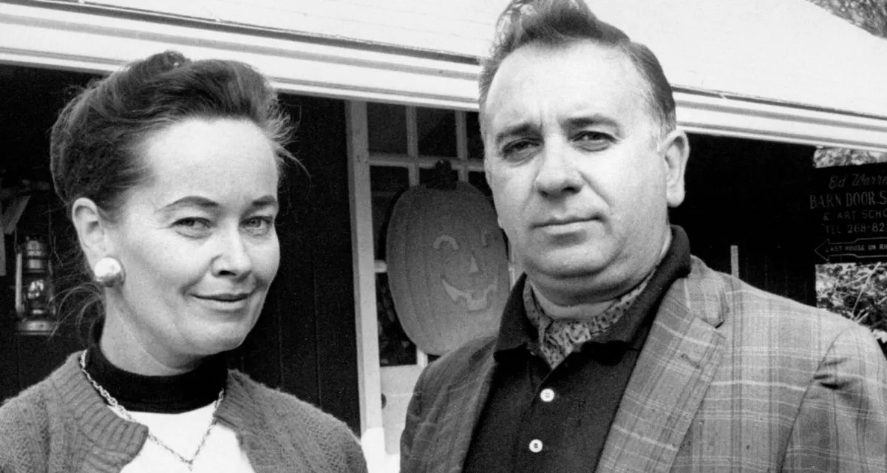
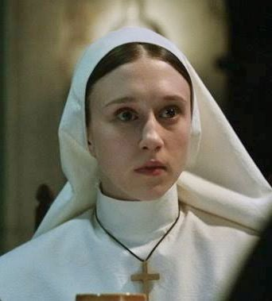

Aqui você verá os personagens principais do Invocaverso
Ed e Lorraine Warren
Ed e Lorraine são um casal de investigadores paranormais que atuam com autorização da Igreja Católica. Lorraine possui dons mediúnicos e visões espirituais, enquanto Ed é um demonologista autodidata. Juntos eles enfrentem forças demoníacas e ajudam famílias atormentadas por atividades sobrenaturais.
Valak (A Freira Demoníaca)
Valak é uma entidade demoníaca extremamente poderosa que toma a forma de uma freira para zombar da fé dos religiosos. Em A Freira, Valak é libertado após bombardeios na Segunda Guerra Mundial, em um convento na Romênia. A Irmã Irene e o Padre Burke são enviados para investigar e acabam enfrentando a entidade.
Mais tarde, Valak retorna em Invocação do Mal 2, manipulando o caso de Enfield e atormentando Lorraine Warren com visões, tentando matá-la. Em A Freira 2, a entidade continua sua busca por um artefato sagrado e espalha terror por vários lugares da Europa.
Irmã Irene
Irmã Irene é uma jovem noviça sensitiva que investiga os acontecimentos macabros no convento de Carta, na Romênia, em A Freira. Ao lado do padre Burke, ela enfrenta Valak com coragem e fé. Em A Freira 2, ela retorna após novos ataques relacionados à entidade e descobre que tem uma ligação espiritual com uma santa mártir, o que lhe dá força para resistir ao mal.
Annabelle (A Boneca Amaldiçoada)
Annabelle é uma boneca de aparência antiga usada por uma entidade demoníaca para se aproximar das pessoas e gerar sofrimento. Em Annabelle 2: A Criação do Mal, a boneca é feita por um artesão após a morte trágica de sua filha. O casal, em luto, permite que algo sobrenatural se manifeste por meio do brinquedo.
Em Annabelle, a boneca chega às mãos de um jovem casal após um ataque de um culto satânico. Em Annabelle 3: De Volta para Casa, a boneca já está trancada no museu dos Warren, mas sua presença influencia outros objetos amaldiçoados e libera espíritos quando fica próxima da filha do casal, Judy Warren.
Bathsheba Sherman
Em Invocação do Mal, Bathsheba é o espírito maligno que assombra a casa da família Perron. Antiga moradora da propriedade, ela teria sacrificado seu próprio filho ao demônio antes de se suicidar, amaldiçoando a terra. Quando a família Perron se muda para o local, a entidade passa a aterrorizá-los, possuindo a mãe, Carolyn, e tentando levá-la a matar suas filhas.
Warren são chamados para investigar e acabam realizando um exorcismo para salvar a família.